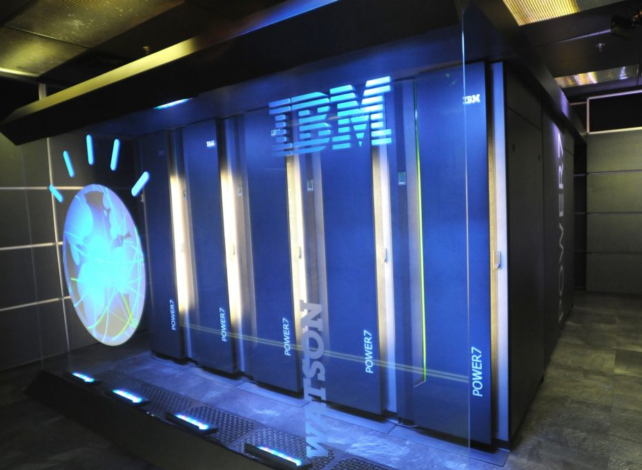
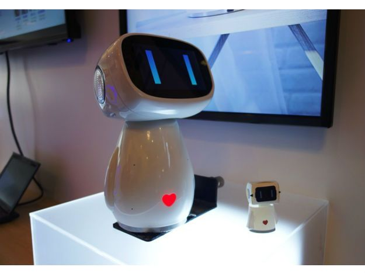
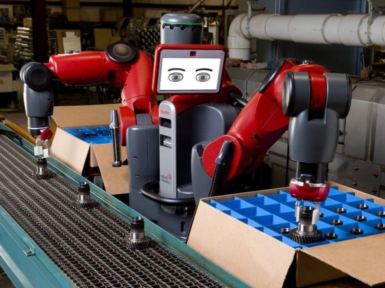

5.APLICAÇÕES DE INTELIGÊNCIA ARTIFICIAL NAS EMPRESAS
1. WATSON
Estrela da IBM e destaque na computação cognitiva, o Watson é um sistema que fala e entende o que as pessoas falam. O Bradesco foi o primeiro usuário da tecnologia no Brasil e vê potencial para ela nas áreas de atendimento a clientes, treinamento de funcionários e gestão de fortunas.
Extremamente versátil, o Watson tem sido bastante usado também no setor de saúde para dar assistência a médicos, com base na análise de publicações científicas e de estudos de caso. E o melhor: o sistema aprende com a própria experiência e, assim, oferece resultados cada vez mais precisos.

2. CHATBOTS
Eles usam conversas com linguagem natural para interagir com aplicativos. Para isso, reproduzem o comportamento de decisões de um ser humano: reconhecem nomes e números de documentos, por exemplo, e agem com base nas expressões do cliente — mesmo quando ele escreve errado.
Ligado ao banco de dados da empresa, onde todos os assuntos são armazenados, é capaz de fazer conexões com o que está sendo pedido. Assim, encaminha solicitações ao atendente correto ou, às vezes, resolve sozinho.
3. ASSISTENTE PESSOAL
Ajuda a resolver tarefas simples na rotina da empresa: os funcionários podem, por exemplo, consultar rapidamente as tarefas do dia, a programação de reuniões, o calendário de viagens e até saber quanto tempo vai demorar no deslocamento na ida e volta do trabalho ou na visita a um cliente, entre outros.

4. ROBOTIZAÇÃO
O uso de robôs não é exatamente uma novidade, mas atualmente eles já são capazes de trabalhar de forma autônoma e até aprender com transformações ocorridas em tempo real, bem como se comunicar com outras máquinas.
Há até os que não precisam sequer de programação, como o Baxter, da Rethink Robotics: ele só precisa ser ensinado uma vez a fazer um trabalho. Além disso, pode ser colega de funcionários humanos, já que possui sensores que evitam que os machuque.

5. GESTÃO
A inteligência artificial ajuda as empresas a conectarem todas as suas informações e comunicações. Isso favorece a tomada de decisão baseada nos pontos críticos e na solução de problemas. Além disso, ela ajuda a identificar quais colaboradores mais contribuem para os resultados da organização.
E então? Você já teve algum contato com a inteligência artificial? Conte pra gente, nos comentários, suas experiências e dúvidas a respeito dessa tecnologia!